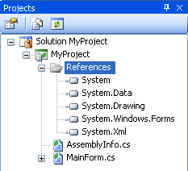
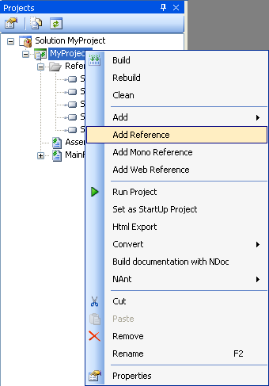
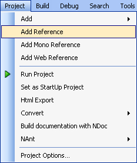
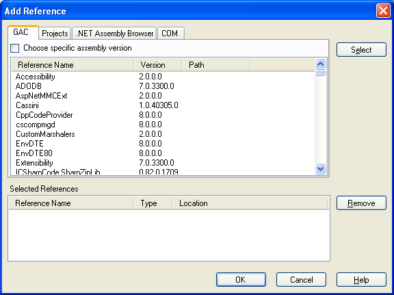
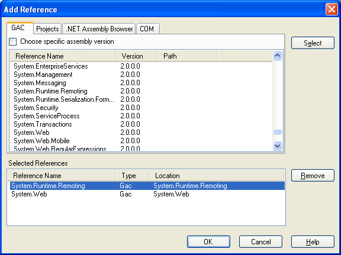
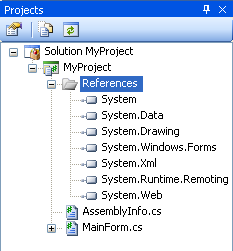

This opens the Project Explorer.


Alternatively you can select Add Reference from the Project menu.

This opens the Add Reference dialog box.

From the dialog you can add a reference to an assembly in the GAC, a project reference, a COM reference or you can add a reference by browsing to an assembly on the file system.

The reference will be displayed under References in the Project Explorer. The screenshot below shows the System.Runtime.Remoting and System.Web references added to the project.

 .
.